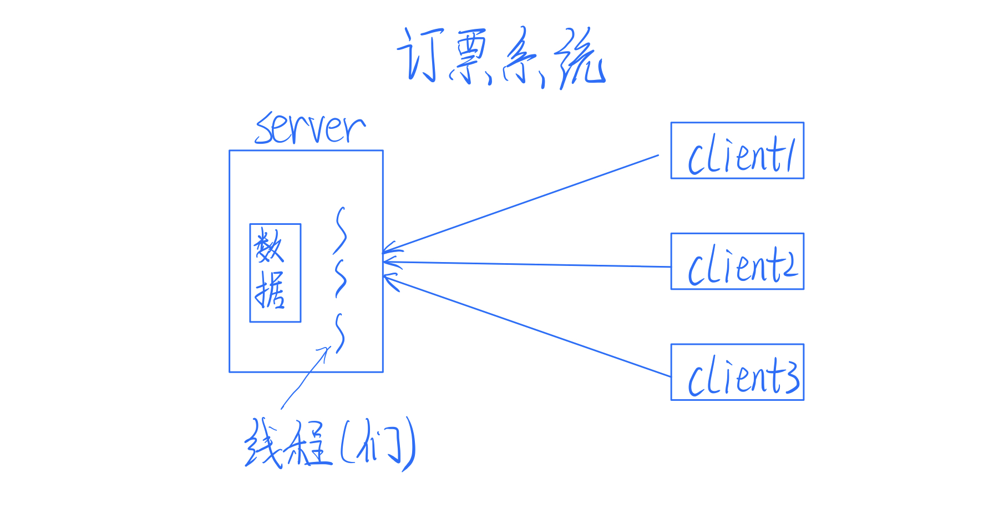
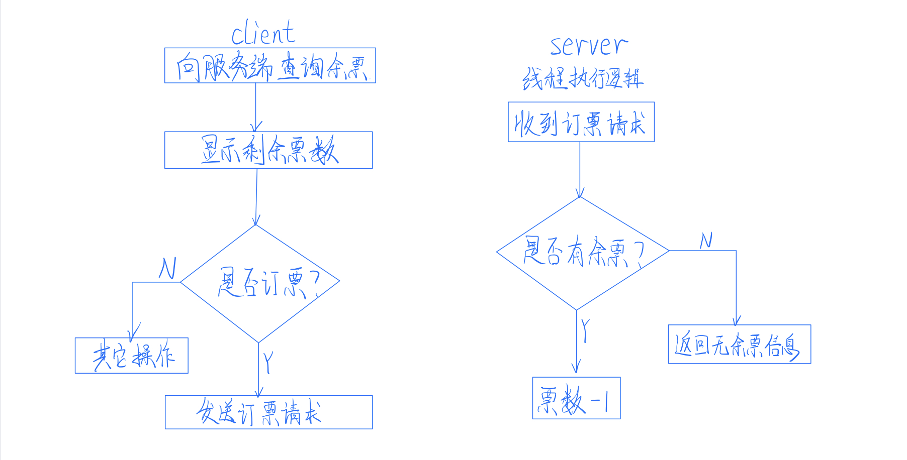
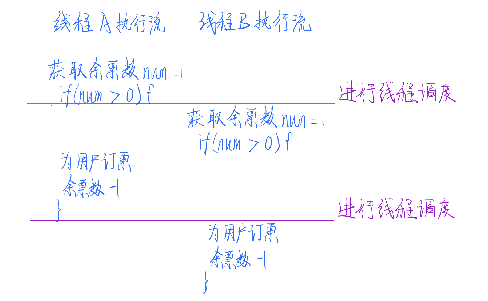
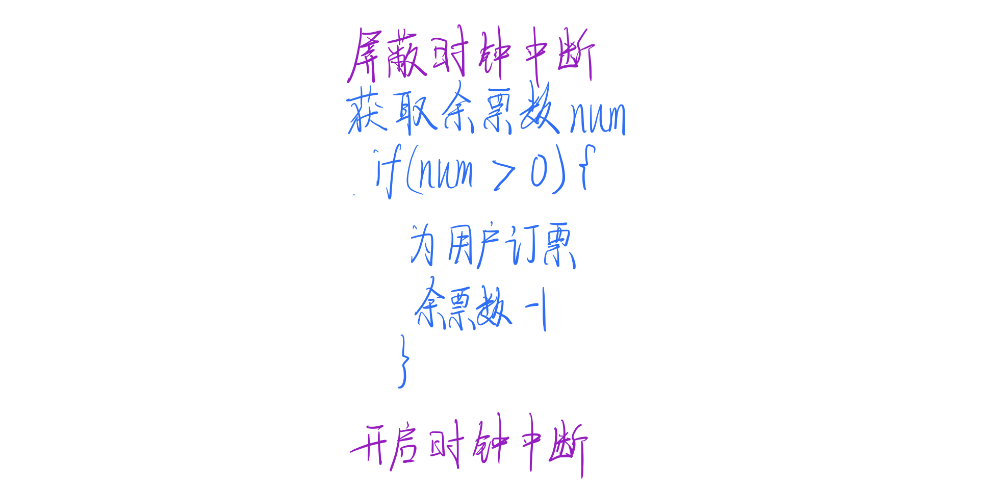
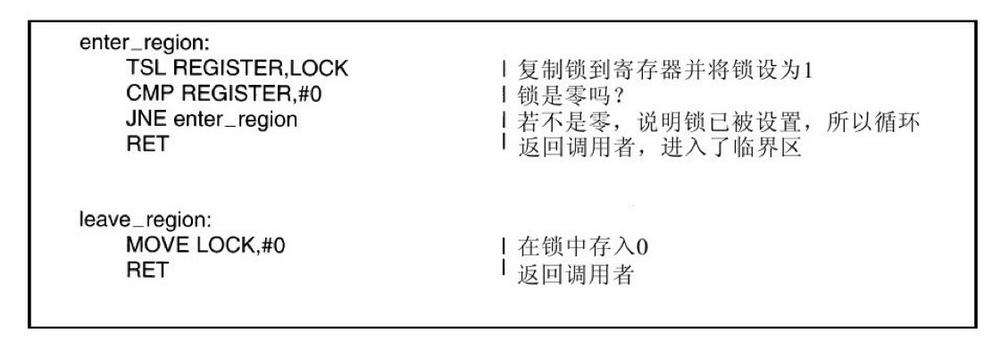

本年度第 10 次操作系统成员会议开始啦！
一月一度的会议旨在让大家互相交流，解决最近在工作中出现的问题，以提高整个计算机系统的工作效率。因为计算机硬件在飞速发展，而操作系统是连接计算机硬件和应用程序的中间层，如果故步自封，很快就会被市场淘汰，所以每位操作系统成员都很重视月度会议。
这次提出问题的是进程和线程两兄弟。
站在众人前面，线程显得有些怯场，他戳了戳进程，示意让他先来讲。进程迅速整理了下思路，挺直了身板，说：“这次的问题是在一个订票系统里发现的，我把这个系统的简单逻辑画出来了，你们一边看我一边说。”

“这个订票系统分为服务器端（server）和客户端（client），当用户与服务器建立连接时，服务器端就会建立一个新的线程来为客户端提供服务。订票逻辑是这样的：

单独从这个逻辑图上看是没有问题的，但在实际情况下，因为经常出现多个用户同时抢订一张票的情景，这种方式就可能会出错。就像这样：

在线程 A 确定完余票（假设是 1），但还未能成功订票之前，线程 B 得到了余票数为 1 的信息，所以 B 也认为可以订票，最后导致一张票卖出去两份。“
内存一针见血的道：“我看这就是几个线程执行流的冲突问题嘛，本来应该一个线程订票操作结束后，另一个线程才能查询余票。像这样执行流交叉，肯定还会出现其它意想不到的问题。”
进程佩服的说：“诶别说，内存你说的太有道理了，我也遇到过类似的情况，上次我和另一个进程共享一部分内存空间，结果在使用同一个数据的时候，他把我刚写进去的数据覆盖掉了，害得我后面的计算全出错了。”
这时，磁盘发表了他的看法：“执行流的问题，那一看就是进程调度器的锅，怎么非得在别人执行到关键步骤的时候把人家从 CPU 上赶下来！要是调度器稍微等一会儿，这问题不就解决了？”
进程调度器听到这话，气的站起来，说：“你，你怎么凭空污人清白！什么时候切换进程不是由我来决定好不好？我是负责从就绪队列里选出最应该使用 CPU 的进程而已。等我开始调度的时候，那些进程就已经被操作系统撤下来了。”
操作系统补充道：“调度器说的没错，调度的时机是由中断决定的。看样子这种情况出现在进程时间片用尽的时候，出现了时钟中断，然后被其他进程抢占了 CPU 资源。”
磁盘听了，不好意思的说：“对不起，刚刚是我太武断了。那照你的意思，我们在执行到这部分代码的时候，像这样屏蔽时钟中断可以解决这个问题了？”

操作系统摇摇头：“「中断禁用」这种方式确实可以防止进程在运行这部分代码时进行切换，但是，时钟中断是我的一项非常重要的功能，怎么能随随便便就把控制权交给人类呢？万一有的程序员想要他们的代码可以完全占有 CPU ，不把时钟中断给我开启怎么办？我是不可能把这种重要权限交出去的，我要对整个系统负责。”
内存在旁边赞同道：“除了这一方面，你还要知道，现在都是多核时代了，你即使禁用了这个 CPU 的时钟中断，其他几个核还是能切换进程，然后访问这些数据。磁盘啊，你明明存了那么多文件，怎么懂得还是那么少。。。”
磁盘愤愤的道：“别瞧不起我，我这就去找有没有办法解决这个问题！”
思考了许久的 CPU 开口了：“我来捋一捋吧，现在咱的目标是，不让两个进程同时执行这一段代码——我们把这段代码叫做临界区吧，换句话说，我们需要让进程互斥的进入临界区。那我们就把这段临界区「加锁」，”
“加锁？这是什么意思？”
“加锁是个比喻，其实「锁」只是一个共享变量，我们可以让它有 OPEN 和 CLOSE 这两个值。一个进程，比如说 A，进入临界区之前，先检查锁是不是 OPEN 状态，如果是的话，就把锁改为 CLOSE 状态 ，这样其他进程在进入临界区时，会发现锁已经 CLOSE 了，那就让他们循环等待 ，直到 A 出临界区然后将锁打开。”
内存眉头一皱，发现事情并没有这么简单——如果 A 发现锁是开着的，但在 A 还没有关闭锁之前，切换到了进程 B ，那么 B 也会发现锁是开着的，那么 B 也将能够进入临界区！
想到这里，内存把问题告诉 CPU，但 CPU 说，这对他不是问题。
原来计算机里有一条硬件支持的指令——TSL（test and set lock，测试并加锁），这条指令可以保证读字和写字的操作「不可分割」，也就是说，在这条指令结束前，就连其他处理器也不可能访问该内存字。
“TSL 指令会把内存字 lock 读到寄存器上，然后在对应的内存地址上写入一个非零值。那我们就可以利用这条指令改进刚刚的加锁的方法，就像这样：

我们让进程在进入临界区之前先调用 enter_region ，如果锁已经被关闭（表现为锁非 0 ），就循环调用enter_region ，直到锁打开，然后再进入临界区。出临界区之后，就调用 leave_region 把锁打开。这样不就解决你的问题了？“
内存点点头，说：“这确实是一个好方法，解决了临界区的互斥问题。”
不过操作系统不是很满意这种解决方案：“这种解决方式需要忙等待，浪费了 CPU 的资源啊，我觉得这种 TSL 方案需要改进。”
这时候大家陷入了沉默——谁也没有想到更好的解决方案，会议好像就此僵住了。
谁能想到一种更好的方案呢？
哈哈，我在文章里埋了伏笔哦，你猜猜是谁找到了更好的方法呢？
觉得我写的还不错的话，就点个赞吧！
声明：原创文章，未经授权，禁止转载